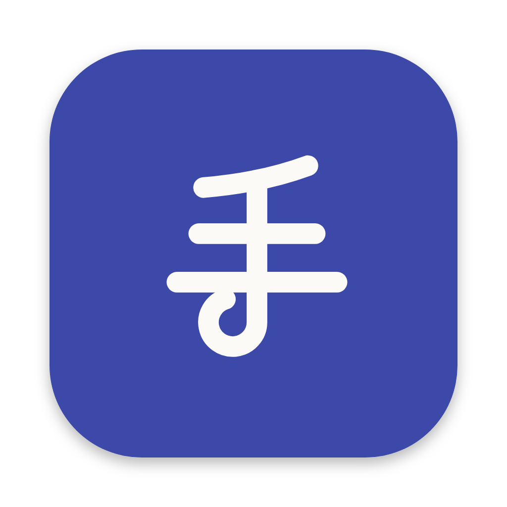

<!doctype html>
<html lang="en">
<head>
<meta charset="utf-8">
<title>tazuna · design review 10 prototype (v7)</title>
<!-- Design review 10 (2026-11-20): a mark of its own, the conversation as a sheet of paper on the desk, and the fixes the
     review found. "Now" is the app as it is (screenshots from the sweep, out/review-10/); "Proposed" is drawn here. Numbered
     pins mark every change; the panel at the bottom right switches screens, versions and variants. Not the app. -->
<style>
@font-face { font-family: "Geist"; src: url("../node_modules/geist/dist/fonts/geist-sans/Geist-Regular.woff2") format("woff2"); font-weight: 400; }
@font-face { font-family: "Geist"; src: url("../node_modules/geist/dist/fonts/geist-sans/Geist-Medium.woff2") format("woff2"); font-weight: 500; }
@font-face { font-family: "Geist"; src: url("../node_modules/geist/dist/fonts/geist-sans/Geist-SemiBold.woff2") format("woff2"); font-weight: 600; }
@font-face { font-family: "Geist Mono"; src: url("../node_modules/geist/dist/fonts/geist-mono/GeistMono-Variable.woff2") format("woff2"); font-weight: 100 900; }
@font-face { font-family: "Source Serif 4"; src: url("../node_modules/@fontsource-variable/source-serif-4/files/source-serif-4-latin-wght-normal.woff2") format("woff2"); font-weight: 200 900; }
:root {
  --canvas:#f6f4ef; --main:#fbfaf7; --sidebar:#f3f0e9; --card:#fffefb; --field:#efebe3; --hover:#e7e3db; --selected:#e6e1f2;
  --ink:#23221e; --ink-2:#3f3c35; --muted:#5b574f; --faint:#69655d; --line:#e3ded3; --line-soft:#ece8df; --line-strong:#d8d2c5;
  --accent:#3d4aa8; --accent-ink:#2f3a8f; --accent-soft:#e7e8f6; --on-accent:#fff; --ok:#3b7d4f; --bad:#b4473a; --warn:#a76a14;
  --code-string:#7a5a1c; --code-number:#8a4a6b;
  --add-bg:#e6f0e4; --add-word:#c4dfc0; --del-bg:#f6e4e0; --del-word:#ecc2b9;
  --desk:#efebe3; --sheet-shadow:0 0 0 1px #2321190a, 0 1px 2px #2321190f, 0 8px 28px #2321190d;
  --shadow:0 1px 2px #2321190d, 0 4px 14px #23211908; --pop:0 2px 6px #2321190f, 0 14px 36px #23211924; --popfill:var(--card);
  --ui:"Geist", system-ui, sans-serif; --mono:"Geist Mono", ui-monospace, monospace; --prose:"Source Serif 4", Georgia, serif;
  --tbg:#f6f4ef;
}
.dark {
  --canvas:#171613; --main:#1b1a17; --sidebar:#151411; --card:#211f1b; --field:#2a2823; --hover:#302e29; --selected:#2b2c45;
  --ink:#ece8df; --ink-2:#d2cdc2; --muted:#afaa9e; --faint:#9a958d; --line:#2f2c27; --line-soft:#25231f; --line-strong:#3a3731;
  --accent:#8f9bf0; --accent-ink:#aab3f5; --accent-soft:#272a44; --on-accent:#14152a; --ok:#7cc08f; --bad:#e08b7f; --warn:#e0b46a;
  --code-string:#d6b878; --code-number:#d9a0c0;
  --add-bg:#1f2a20; --add-word:#2f4a31; --del-bg:#2e1f1c; --del-word:#553029;
  --desk:#121110; --sheet-shadow:0 0 0 1px #ffffff0d, 0 1px 2px #00000066, 0 10px 30px #00000059;
  --shadow:none; --pop:0 0 0 1px #ffffff0a, 0 10px 32px #00000080; --popfill:#282622;
  --tbg:#171613;
}
* { box-sizing: border-box; margin: 0; padding: 0; }
html, body { height: 100%; }
body { font: 13.5px/1.5 var(--ui); color: var(--ink); background: #0d0d0c; overflow: hidden; -webkit-font-smoothing: antialiased; }
body.light { background: #d9d5cc; }
button { font: inherit; color: inherit; background: none; border: 0; cursor: default; }
.mono { font-family: var(--mono); font-size: 12.5px; }
.faint { color: var(--faint); } .muted { color: var(--muted); } .ok { color: var(--ok); } .bad { color: var(--bad); } .warn { color: var(--warn); }
.hair { display: inline-block; width: 1px; height: .8em; background: var(--line-strong); margin: 0 7px; transform: translateY(.08em); }
kbd { font: 11px var(--mono); border: 1px solid var(--line); border-radius: 5px; padding: 0 5px; color: var(--faint); }
.ico { width: 15px; height: 15px; flex: none; stroke: currentColor; fill: none; stroke-width: 1.5; stroke-linecap: round; stroke-linejoin: round; }
.ico.s { width: 13px; height: 13px; } .ico.xs { width: 11px; height: 11px; stroke-width: 2; }

/* the stage: a 1280×800 window, scaled to the page */
.stage { position: fixed; inset: 0 348px 0 0; }
body.pmin .stage { right: 0; }
.frame { position: absolute; left: 50%; top: 50%; width: 1280px; height: 800px; transform-origin: center; overflow: hidden; border-radius: 10px; box-shadow: 0 20px 60px #0007; background: var(--canvas); }
.frame.tall { height: 900px; }
.frame > img.now { position: absolute; inset: 0; width: 100%; height: 100%; display: block; }
.frame .cut { position: absolute; top: 0; bottom: 0; width: 2px; background: #fff; box-shadow: 0 0 0 1px #0006; z-index: 40; cursor: ew-resize; }
.frame .cut::after { content: "Now  |  Proposed"; position: absolute; top: 10px; left: 50%; transform: translateX(-50%); white-space: nowrap; font: 600 11px var(--ui); color: #fff; background: #111c; padding: 2px 8px; border-radius: 99px; }
.pin { position: absolute; z-index: 30; width: 20px; height: 20px; margin: -10px 0 0 -10px; border-radius: 50%; background: #e2513c; color: #fff; font: 600 11px/20px var(--ui); text-align: center; box-shadow: 0 0 0 2px #fff, 0 2px 6px #0006; pointer-events: auto; }
.pin.new { background: #2f9e6a; }
.pin.i { position: relative; display: inline-block; margin: 0 0 0 6px; vertical-align: middle; transform: translateY(-1px); }
.nopins .pin { display: none; }

/* ---------- the proposed window ---------- */
.win { position: absolute; inset: 0; display: flex; flex-direction: column; background: var(--canvas); }
.cols { flex: 1; min-height: 0; display: grid; grid-template-columns: 248px 1fr; }
.cols.panel { grid-template-columns: 248px 1fr 300px; }
.side { background: var(--sidebar); border-right: 1px solid var(--line); padding: 12px 10px 10px; display: flex; flex-direction: column; min-height: 0; position: relative; }
.main { background: var(--main); display: flex; flex-direction: column; min-width: 0; min-height: 0; position: relative; }
.rail { background: var(--canvas); border-left: 1px solid var(--line); padding: 16px 14px; display: flex; flex-direction: column; gap: 12px; overflow: hidden; position: relative; }
/* paper on the desk: the sidebar, the rail and the status bar are the desk; the conversation is one sheet on it */
.paper .win { background: var(--desk); }
.paper .side { background: transparent; border-right: 0; }
.paper .rail { background: transparent; border-left: 0; padding: 18px 16px 16px 10px; }
.paper .main { margin: 8px 8px 0 0; border-radius: 12px; box-shadow: var(--sheet-shadow); overflow: hidden; }
.paper .cols.panel .main { margin-right: 0; }
.paper .sbar { background: transparent; border-top: 0; }
.grain .win::before { content: ""; position: absolute; inset: 0; pointer-events: none; opacity: .5; mix-blend-mode: multiply;
  background-image: url("data:image/svg+xml,%3Csvg xmlns='http://www.w3.org/2000/svg' width='160' height='160'%3E%3Cfilter id='n'%3E%3CfeTurbulence type='fractalNoise' baseFrequency='.9' numOctaves='2' stitchTiles='stitch'/%3E%3CfeColorMatrix values='0 0 0 0 .5  0 0 0 0 .45  0 0 0 0 .38  0 0 0 .09 0'/%3E%3C/filter%3E%3Crect width='160' height='160' filter='url(%23n)'/%3E%3C/svg%3E"); }
.dark.grain .win::before { mix-blend-mode: screen; opacity: .35; }
.grain .main, .grain .side .list { position: relative; z-index: 1; }

.brand { display: flex; align-items: center; gap: 9px; padding: 2px 8px 12px; font-weight: 600; letter-spacing: -.01em; font-size: 14px; }
.tile { display: grid; place-items: center; border-radius: 22%; background: var(--accent); flex: none; }
.tile svg { fill: none; stroke: var(--on-accent); stroke-linecap: round; stroke-linejoin: round; }
.tile.paperish { background: var(--main); box-shadow: inset 0 0 0 1px var(--line-strong); } .tile.paperish svg { stroke: var(--accent); }
.search { display: flex; align-items: center; gap: 8px; border: 1px solid var(--line); background: var(--field); border-radius: 7px; padding: 7px 9px; color: var(--muted); margin-bottom: 4px; }
.paper .search { background: color-mix(in srgb, var(--field) 70%, var(--desk)); }
.search kbd { margin-left: auto; }
.act { display: flex; align-items: center; gap: 9px; padding: 7px 9px; border-radius: 7px; color: var(--ink-2); }
.list { flex: 1; overflow: hidden; margin: 6px -4px 0; padding: 0 4px; position: relative;
  -webkit-mask-image: linear-gradient(to bottom, transparent 0, #000 14px, #000 calc(100% - 22px), transparent); mask-image: linear-gradient(to bottom, transparent 0, #000 14px, #000 calc(100% - 22px), transparent); }
.grp { display: flex; justify-content: space-between; padding: 12px 9px 4px; font-size: 11.5px; font-weight: 500; color: var(--faint); }
.row { position: relative; display: block; padding: 5px 9px; border-radius: 7px; color: var(--ink-2); }
.row.on { background: var(--selected); color: var(--ink); }
.paper .row.on { background: color-mix(in srgb, var(--selected) 85%, var(--desk)); }
.row .t { display: flex; align-items: center; gap: 6px; white-space: nowrap; overflow: hidden; }
.row .t .x { overflow: hidden; text-overflow: ellipsis; }
.row .s { display: flex; gap: 6px; font-size: 11.5px; color: var(--faint); white-space: nowrap; }
.row .s .age { margin-left: auto; font-variant-numeric: tabular-nums; }
.odot { width: 6px; height: 6px; border-radius: 50%; background: var(--accent); flex: none; }
.spin { width: 11px; height: 11px; border-radius: 50%; border: 1.6px solid var(--accent); border-right-color: transparent; flex: none; animation: rot 1s linear infinite; }
@keyframes rot { to { transform: rotate(360deg); } }
.badge { flex: none; font-size: 11px; color: var(--warn); border: 1px solid color-mix(in srgb, var(--warn) 45%, transparent); border-radius: 999px; padding: 0 6px; line-height: 16px; margin-left: auto; }
.settings { padding-top: 6px; margin-top: 2px; }
.settings .act { color: var(--muted); }

.head { height: 48px; flex: none; display: flex; align-items: center; gap: 8px; padding: 0 16px 0 28px; border-bottom: 1px solid var(--line-soft); white-space: nowrap; }
.head .crumb { color: var(--muted); } .head .ttl { font-weight: 500; overflow: hidden; text-overflow: ellipsis; }
.head .full { font-size: 12px; color: var(--faint); overflow: hidden; text-overflow: ellipsis; margin-left: 4px; }
.head .hb { margin-left: auto; display: flex; gap: 4px; } .head .hb span { width: 28px; height: 28px; display: grid; place-items: center; border-radius: 6px; color: var(--muted); }
.head .hb span.on { background: var(--hover); color: var(--ink); }
.scroll { flex: 1; overflow: hidden; min-height: 0; position: relative; }
.doc { max-width: 756px; margin: 0 auto; padding: 22px 28px 20px; }
.you { display: inline-block; background: var(--field); border-radius: 10px; padding: 9px 14px; color: var(--ink); }
.fold { margin: 14px 0 10px; font-size: 13px; color: var(--muted); display: flex; align-items: center; gap: 4px; }
.prose { font: 15.5px/1.62 var(--prose); color: var(--ink); }
.prose p { margin: 0 0 10px; }
.prose h2 { font-size: 21px; line-height: 1.3; font-weight: 600; margin: 4px 0 8px; letter-spacing: -.01em; }
.prose code { font: 12.5px var(--mono); background: var(--field); padding: 1px 5px; border-radius: 4px; }
.prose ol { padding-left: 22px; margin: 0 0 10px; } .prose li { margin: 2px 0; }
.prose blockquote { margin: 0 0 10px; padding-left: 12px; border-left: 2px solid var(--line-strong); color: var(--ink-2); }
.prose a { color: var(--accent-ink); text-decoration: underline; text-underline-offset: 2px; }
.prose math { font-size: 1.05em; }
/* tables: rules between rows, a quiet header, numbers to the right in tabular figures */
.tbl { border-collapse: collapse; font: 13px var(--ui); margin: 2px 0 14px; min-width: 300px; }
.tbl th { font-size: 11.5px; font-weight: 500; color: var(--faint); text-align: left; padding: 0 18px 6px 0; border-bottom: 1px solid var(--line-strong); }
.tbl td { padding: 7px 18px 7px 0; border-bottom: 1px solid var(--line-soft); font-variant-numeric: tabular-nums; }
.tbl .r { text-align: right; } .tbl tr:last-child td { border-bottom: 0; }
.tbl code { font-size: 12px; }
.code { border: 1px solid var(--line); border-radius: 8px; background: var(--card); margin: 0 0 12px; overflow: hidden; }
.code .ch { display: flex; justify-content: space-between; align-items: center; padding: 4px 8px 4px 12px; border-bottom: 1px solid var(--line-soft); font-size: 11.5px; color: var(--faint); }
.code pre { padding: 10px 12px; font: 12.5px/1.55 var(--mono); }
.k { color: var(--accent-ink); } .str { color: var(--code-string); } .num { color: var(--code-number); } .cm { color: var(--faint); font-style: italic; }
.meta { display: flex; align-items: center; font-size: 12px; color: var(--faint); margin: 2px 0 18px; }
.meta .cp { display: inline-flex; gap: 4px; align-items: center; }

.composer { margin: 0 auto 18px; width: min(700px, calc(100% - 56px)); border: 1px solid var(--line-strong); border-radius: 12px; background: var(--card); padding: 12px 12px 10px 16px; box-shadow: var(--shadow); color: var(--faint); position: relative; }
.composer.focus { border-color: var(--accent); }
.pills { display: flex; gap: 6px; margin-top: 14px; align-items: center; }
.pill { display: inline-flex; align-items: center; gap: 6px; border: 1px solid var(--line); border-radius: 999px; padding: 3px 9px 3px 9px; font-size: 12px; color: var(--ink-2); background: var(--field); white-space: nowrap; }
.pill .ico { width: 13px; height: 13px; }
.pill .dn { width: 11px; height: 11px; color: var(--faint); margin-left: -1px; }
.pill .lvl { color: var(--faint); }
.clip { width: 28px; height: 28px; display: grid; place-items: center; color: var(--faint); border-radius: 50%; }
.send { margin-left: auto; width: 30px; height: 30px; border-radius: 50%; border: 1px solid var(--line); display: grid; place-items: center; color: var(--faint); }

.sbar { height: 28px; flex: none; display: flex; align-items: center; gap: 0; padding: 0 14px; border-top: 1px solid var(--line); background: var(--sidebar); font-size: 12px; color: var(--muted); white-space: nowrap; font-variant-numeric: tabular-nums; }
.sbar b { font-weight: 500; color: var(--ink); }
.meter { display: inline-block; width: 30px; height: 4px; border-radius: 3px; background: var(--line-strong); margin: 0 8px 0 6px; position: relative; overflow: hidden; transform: translateY(-1px); }
.meter i { position: absolute; left: 0; top: 0; bottom: 0; background: var(--accent); border-radius: 3px; }
.meter i.w { background: var(--warn); }
.sdot { width: 6px; height: 6px; border-radius: 50%; background: var(--warn); display: inline-block; margin-right: 7px; }
.sp { flex: 1; }
.needs { display: inline-flex; align-items: center; gap: 6px; color: var(--faint); margin-left: 12px; }

/* rail (work panel) as sections on the desk, not cards */
.sec h4 { display: flex; align-items: center; gap: 8px; font-size: 13px; font-weight: 500; color: var(--ink); margin-bottom: 8px; }
.sec h4 .n { margin-left: auto; font-weight: 400; font-size: 12px; }
.sec { padding-bottom: 14px; border-bottom: 1px solid var(--line); }
.sec:last-child { border-bottom: 0; }
.sec .ln { font-size: 12.5px; color: var(--muted); }
.btn { display: inline-flex; align-items: center; gap: 6px; border: 1px solid var(--line-strong); border-radius: 7px; padding: 3px 10px; font-size: 12.5px; color: var(--ink); background: var(--card); }
.cards .sec { border: 1px solid var(--line); border-radius: 10px; padding: 12px 14px; background: var(--card); }

/* start screen */
.start { flex: 1; display: flex; flex-direction: column; align-items: center; padding-top: 128px; }
.start h1 { font: 400 28px/1.2 var(--prose); letter-spacing: -.01em; }
.start h1 .proj { border-bottom: 1.5px dotted var(--line-strong); }
.start .sub { color: var(--muted); font-size: 13px; margin: 8px 0 30px; }
.start .composer { width: 700px; margin: 0; }
.cards2 { display: grid; grid-template-columns: 1fr 1fr; gap: 14px; width: 700px; margin-top: 30px; }
.card { border: 1px solid var(--line); border-radius: 12px; overflow: hidden; }
.card .ch { padding: 10px 14px 8px; font-size: 12px; color: var(--faint); font-weight: 500; }
.card .it { display: flex; align-items: center; gap: 10px; padding: 9px 14px; border-top: 1px solid var(--line-soft); }
.card .it .tt { flex: 1; min-width: 0; } .card .it .tt div:first-child { color: var(--ink); white-space: nowrap; overflow: hidden; text-overflow: ellipsis; }
.card .it .tt div + div { font-size: 12px; color: var(--faint); }
.keys { margin-top: 24px; display: flex; gap: 18px; font-size: 12px; color: var(--faint); align-items: center; }

/* review */
.rv { flex: 1; display: grid; grid-template-columns: 240px 1fr; min-height: 0; }
.rv .files { border-right: 1px solid var(--line-soft); padding: 12px 8px; }
.rv .f { display: flex; align-items: center; gap: 8px; padding: 6px 8px; border-radius: 6px; background: var(--hover); }
.rv .f .m { font: 500 11px var(--mono); color: var(--warn); }
.rv .tot { font-size: 12px; color: var(--faint); padding: 10px 8px; border-top: 1px solid var(--line-soft); margin-top: 8px; display: flex; align-items: center; }
.rv .body { padding: 16px 20px; overflow: hidden; }
.dcard { border: 1px solid var(--line); border-radius: 10px; overflow: hidden; background: var(--card); }
.dcard .dh { display: flex; align-items: center; gap: 8px; padding: 10px 14px; border-bottom: 1px solid var(--line-soft); }
.dcard .dh .sp { flex: 1; } .tb { font-size: 12.5px; color: var(--muted); padding: 2px 8px; } .tb.bad { color: var(--bad); }
.hunk { display: flex; align-items: center; font: 12px var(--mono); color: var(--faint); background: color-mix(in srgb, var(--accent-soft) 60%, var(--card)); padding: 4px 14px; }
.hunk .sp { flex: 1; }
.dl { display: grid; grid-template-columns: 44px 44px 18px 1fr; font: 12.5px/19px var(--mono); }
.dl > span { padding: 0 6px; } .dl .no { text-align: right; color: var(--faint); }
.dl .c { white-space: pre-wrap; word-break: break-all; padding-left: calc(var(--i, 0) * 1ch + 4ch); text-indent: calc(var(--i, 0) * -1ch - 4ch); padding-right: 14px; }
.dl.add { background: var(--add-bg); } .dl.del { background: var(--del-bg); }
.dl .w { border-radius: 3px; } .dl.add .w { background: var(--add-word); } .dl.del .w { background: var(--del-word); }
.seg { display: inline-flex; border: 1px solid var(--line); border-radius: 8px; padding: 2px; background: var(--field); }
.seg span { padding: 2px 10px; border-radius: 6px; font-size: 12.5px; color: var(--muted); } .seg span.on { background: var(--card); color: var(--ink); box-shadow: 0 0 0 1px var(--line); }

/* usage */
.ov { position: absolute; inset: 0; background: #0000008c; display: grid; place-items: center; z-index: 5; }
.light .ov { background: #1d1b1640; }
.dlg { width: 780px; height: 720px; background: var(--card); border: 1px solid var(--line-strong); border-radius: 14px; box-shadow: var(--pop); overflow: hidden; display: flex; flex-direction: column; }
.dlg .dh { display: flex; align-items: center; padding: 14px 20px; border-bottom: 1px solid var(--line-soft); font-weight: 500; }
.dlg .bd { padding: 16px 24px; overflow: hidden; }
.ucard { border: 1px solid var(--line); border-radius: 10px; overflow: hidden; }
.figs { display: grid; grid-template-columns: repeat(3, 1fr); border-bottom: 1px solid var(--line-soft); }
.figs > div { padding: 12px 14px; } .figs > div + div { border-left: 1px solid var(--line-soft); }
.figs .l { font-size: 12px; color: var(--faint); } .figs .v { font-size: 22px; font-weight: 600; letter-spacing: -.02em; }
.figs .v small { font-size: 12.5px; font-weight: 400; color: var(--muted); margin-left: 6px; letter-spacing: 0; } .figs .q { font-size: 12.5px; color: var(--muted); }
.chart { position: relative; height: 150px; display: flex; align-items: flex-end; gap: 6px; padding: 14px 14px 0; }
.chart .b { flex: 1; display: flex; flex-direction: column-reverse; border-radius: 3px 3px 0 0; overflow: hidden; }
.chart .pl { background: color-mix(in srgb, var(--accent) 38%, var(--card)); }
.chart .pd { background: var(--accent); }
.chart .b.hov .pl { background: color-mix(in srgb, var(--accent) 55%, var(--card)); }
.axis { display: flex; justify-content: space-between; padding: 6px 14px 4px; font-size: 11.5px; color: var(--faint); font-variant-numeric: tabular-nums; }
.legend { display: flex; gap: 16px; padding: 4px 14px 12px; font-size: 12px; color: var(--muted); }
.legend i { display: inline-block; width: 10px; height: 10px; border-radius: 3px; margin-right: 6px; transform: translateY(1px); }
.ttip { position: absolute; background: var(--popfill); border: 1px solid var(--line-strong); box-shadow: var(--pop); border-radius: 8px; padding: 6px 10px; font-size: 12px; white-space: nowrap; }
.mt { width: 100%; border-collapse: collapse; font-size: 13px; }
.mt th { font-size: 11.5px; color: var(--faint); font-weight: 500; text-align: left; padding: 8px 14px 6px; border-top: 1px solid var(--line-soft); }
.mt td { padding: 7px 14px; border-top: 1px solid var(--line-soft); font-variant-numeric: tabular-nums; } .mt .r { text-align: right; }
.fold2 { display: flex; align-items: center; gap: 8px; border: 1px solid var(--line); border-radius: 10px; padding: 10px 14px; margin-top: 16px; }

/* brand page */
.bp { position: absolute; inset: 0; background: var(--canvas); padding: 34px 44px; overflow: hidden; }
.bp h2 { font: 400 24px/1.2 var(--prose); margin-bottom: 4px; } .bp .lead { color: var(--muted); margin-bottom: 22px; max-width: 900px; }
.bgrid { display: grid; grid-template-columns: 1.1fr 1fr; gap: 26px; }
.bbox { border: 1px solid var(--line); border-radius: 12px; padding: 16px 18px; background: var(--main); }
.bbox h3 { font-size: 12px; font-weight: 500; color: var(--faint); margin-bottom: 12px; display: flex; align-items: center; }
.dock { display: flex; align-items: flex-end; gap: 14px; padding: 14px 18px; border-radius: 22px; background: #2b2a28; width: max-content; }
.light .dock { background: #e2ded6; }
.dock .ph { width: 64px; height: 64px; border-radius: 15px; background: #4a4844; } .light .dock .ph { background: #c9c4ba; }
.dock .lb { font-size: 11px; color: #aaa; text-align: center; margin-top: 6px; } .light .dock .lb { color: #666; }
.icon { position: relative; width: 80px; height: 80px; flex: none; }
.icon svg.sq { position: absolute; inset: 0; }
.sizes { display: flex; align-items: flex-end; gap: 18px; }
.sizes .c { text-align: center; font-size: 11px; color: var(--faint); }
.sizes .c > div { margin-bottom: 6px; display: grid; place-items: center; }

/* terminal drawings */
.tp { position: absolute; inset: 0; background: var(--canvas); padding: 22px 26px; overflow: hidden; }
.tp h2 { font: 400 22px/1.2 var(--prose); margin-bottom: 4px; } .tp .lead { color: var(--muted); margin-bottom: 14px; font-size: 13px; }
.tgrid { display: grid; grid-template-columns: 1fr 1fr; gap: 14px 16px; }
.tcell { position: relative; }
.tcell .cap { font-size: 12px; color: var(--muted); margin-bottom: 5px; display: flex; align-items: center; gap: 6px; }
.tcell img { height: 300px; max-width: 100%; border-radius: 8px; display: block; border: 1px solid #ffffff14; }
.term { background: var(--tbg); border: 1px solid var(--line); border-radius: 8px; padding: 9px 12px; font: 11.6px/15px var(--mono); color: var(--ink); white-space: pre; overflow: hidden; height: 309px; position: relative; }
.term .a { color: var(--accent); } .term .f { color: var(--faint); } .term .m { color: var(--muted); } .term .i2 { color: var(--ink-2); }
.term .g { color: var(--ok); } .term .r { color: var(--bad); } .term .y { color: var(--warn); } .term .b { font-weight: 700; } .term .it { font-style: italic; }
.term .u { text-decoration: underline; color: var(--accent); } .term .cb { background: var(--field); }
.term .tl { background: var(--accent); color: var(--on-accent); font-weight: 700; }
.term .sel { background: var(--accent); color: var(--on-accent); }
.term .rule { color: var(--line-strong); }

/* motion page */
.mp { position: absolute; inset: 0; background: var(--canvas); padding: 26px 34px; overflow: hidden; }
.mp h2 { font: 400 24px/1.2 var(--prose); margin-bottom: 4px; } .mp .lead { color: var(--muted); margin-bottom: 18px; }
.mgrid { display: grid; grid-template-columns: 170px 1fr 1fr; gap: 12px 18px; align-items: start; }
.mgrid .hd { font-size: 12px; color: var(--faint); font-weight: 500; }
.mgrid .nm { font-weight: 500; padding-top: 6px; } .mgrid .nm small { display: block; font-weight: 400; color: var(--muted); font-size: 12px; margin-top: 4px; }
.demo { border: 1px solid var(--line); border-radius: 10px; background: var(--main); padding: 10px 12px; height: 168px; position: relative; overflow: hidden; }
.demo .play { position: absolute; right: 8px; top: 8px; font-size: 11.5px; border: 1px solid var(--line-strong); border-radius: 6px; padding: 1px 8px; color: var(--muted); background: var(--card); cursor: pointer; z-index: 3; }
.mside { width: 230px; background: var(--sidebar); border: 1px solid var(--line-soft); border-radius: 8px; padding: 4px; }
.mside .grp { padding: 6px 8px 2px; }
.mside .row { padding: 3px 8px; }
.fwrap { overflow: hidden; }
.fsteps { padding-left: 18px; border-left: 1px solid var(--line); margin-left: 6px; }
.fsteps div { font-size: 12.5px; color: var(--muted); padding: 2px 0; }
.tdemo { background: var(--tbg); border-radius: 8px; padding: 12px; font: 13px/18px var(--mono); height: 120px; }

/* the changes page */
.chg { position: absolute; inset: 0; background: var(--canvas); padding: 24px 34px; overflow: auto; }
.chg h2 { font: 400 24px/1.2 var(--prose); margin-bottom: 4px; } .chg .lead { color: var(--muted); margin-bottom: 14px; max-width: 980px; }
.ct { width: 100%; border-collapse: collapse; font-size: 12.5px; }
.ct th { text-align: left; font-size: 11.5px; color: var(--faint); font-weight: 500; padding: 4px 10px 6px 0; border-bottom: 1px solid var(--line-strong); }
.ct td { padding: 6px 10px 6px 0; border-bottom: 1px solid var(--line-soft); vertical-align: top; }
.ct td.n { width: 30px; color: var(--faint); font-variant-numeric: tabular-nums; }
.ct .k1 { color: var(--ok); white-space: nowrap; } .ct .k2 { color: var(--accent-ink); white-space: nowrap; } .ct .k3 { color: var(--warn); white-space: nowrap; }
.ct .sc { color: var(--faint); white-space: nowrap; }
.ct code { font: 11.5px var(--mono); color: var(--muted); }
.ct tr.grp td { padding-top: 14px; font-weight: 500; color: var(--ink); border-bottom: 1px solid var(--line); }

/* the switch panel */
.proto { position: fixed; right: 14px; bottom: 14px; z-index: 50; width: 320px; max-height: calc(100vh - 28px); overflow: auto; background: #111; color: #eee; border-radius: 12px; padding: 10px 12px 12px; font: 12px/1.45 system-ui, sans-serif; box-shadow: 0 10px 30px #0008; }
.proto b { display: block; font-size: 11px; color: #999; text-transform: uppercase; letter-spacing: .06em; margin: 9px 0 4px; }
.proto b:first-of-type { margin-top: 0; }
.proto .opts { display: flex; flex-wrap: wrap; gap: 4px; }
.proto button { background: #2a2a2a; color: #ddd; border-radius: 6px; padding: 3px 8px; font-size: 12px; cursor: pointer; }
.proto button.on { background: #5b67d8; color: #fff; }
.proto ol { margin: 6px 0 0 18px; color: #ccc; } .proto ol li { margin: 4px 0; } .proto ol li::marker { color: #888; }
.proto .min { position: absolute; right: 12px; top: 8px; color: #888; cursor: pointer; }
.proto.small > :not(.min):not(.keep) { display: none; }
.proto .keep { color: #bbb; }
</style>
</head>
<body>
<div class="stage"><div class="frame" id="frame"></div></div>
<div class="proto" id="proto"></div>
<script>
const S = { screen: "start", ver: "new", theme: "dark", mark: "loop", icon: "ink", paper: true, grain: false, pins: true, cut: 50 };
const NOW = "../../out/review-10";

// ── icons (Lucide paths) ──────────────────────────────────────────────────────────────────────────────────────────
const P = {
  search: '<circle cx="11" cy="11" r="8"/><path d="m21 21-4.3-4.3"/>', plus: '<path d="M5 12h14M12 5v14"/>',
  folder: '<path d="m6 14 1.5-2.9A2 2 0 0 1 9.24 10H20a2 2 0 0 1 1.94 2.5l-1.54 6a2 2 0 0 1-1.95 1.5H4a2 2 0 0 1-2-2V5a2 2 0 0 1 2-2h3.9a2 2 0 0 1 1.69.9l.81 1.2a2 2 0 0 0 1.67.9H18a2 2 0 0 1 2 2v2"/>',
  gear: '<path d="M12.22 2h-.44a2 2 0 0 0-2 2v.18a2 2 0 0 1-1 1.73l-.43.25a2 2 0 0 1-2 0l-.15-.08a2 2 0 0 0-2.73.73l-.22.38a2 2 0 0 0 .73 2.73l.15.1a2 2 0 0 1 1 1.72v.51a2 2 0 0 1-1 1.74l-.15.09a2 2 0 0 0-.73 2.73l.22.38a2 2 0 0 0 2.73.73l.15-.08a2 2 0 0 1 2 0l.43.25a2 2 0 0 1 1 1.73V20a2 2 0 0 0 2 2h.44a2 2 0 0 0 2-2v-.18a2 2 0 0 1 1-1.73l.43-.25a2 2 0 0 1 2 0l.15.08a2 2 0 0 0 2.73-.73l.22-.39a2 2 0 0 0-.73-2.73l-.15-.08a2 2 0 0 1-1-1.74v-.5a2 2 0 0 1 1-1.74l.15-.09a2 2 0 0 0 .73-2.73l-.22-.38a2 2 0 0 0-2.73-.73l-.15.08a2 2 0 0 1-2 0l-.43-.25a2 2 0 0 1-1-1.73V4a2 2 0 0 0-2-2z"/><circle cx="12" cy="12" r="3"/>',
  panel: '<rect width="18" height="18" x="3" y="3" rx="2"/><path d="M15 3v18"/>',
  side: '<path d="M14 9a2 2 0 0 1-2 2H6l-4 4V4a2 2 0 0 1 2-2h8a2 2 0 0 1 2 2z"/><path d="M18 9h2a2 2 0 0 1 2 2v11l-4-4h-6a2 2 0 0 1-2-2v-1"/>',
  shield: '<path d="M20 13c0 5-3.5 7.5-7.66 8.95a1 1 0 0 1-.67-.01C7.5 20.5 4 18 4 13V6a1 1 0 0 1 1-1c2 0 4.5-1.2 6.24-2.72a1.17 1.17 0 0 1 1.52 0C14.51 3.81 17 5 19 5a1 1 0 0 1 1 1z"/>',
  zap: '<path d="M4 14a1 1 0 0 1-.78-1.63l9.9-10.2a.5.5 0 0 1 .86.46l-1.92 6.02A1 1 0 0 0 13 10h7a1 1 0 0 1 .78 1.63l-9.9 10.2a.5.5 0 0 1-.86-.46l1.92-6.02A1 1 0 0 0 11 14z"/>',
  down: '<path d="m6 9 6 6 6-6"/>', right: '<path d="m9 18 6-6-6-6"/>', left: '<path d="m15 18-6-6 6-6"/>',
  clip: '<path d="m21.44 11.05-9.19 9.19a6 6 0 0 1-8.49-8.49l8.57-8.57A4 4 0 1 1 18 8.84l-8.59 8.57a2 2 0 0 1-2.83-2.83l8.49-8.48"/>',
  up: '<path d="m5 12 7-7 7 7M12 19V5"/>', check: '<path d="M20 6 9 17l-5-5"/>',
  branch: '<path d="M6 3v12"/><circle cx="18" cy="6" r="3"/><circle cx="6" cy="18" r="3"/><path d="M18 9a9 9 0 0 1-9 9"/>',
  pr: '<circle cx="18" cy="18" r="3"/><circle cx="6" cy="6" r="3"/><path d="M13 6h3a2 2 0 0 1 2 2v7M6 9v12"/>',
  term: '<path d="m7 11 2-2-2-2M11 13h4"/><rect width="18" height="18" x="3" y="3" rx="2"/>',
  copy: '<rect width="14" height="14" x="8" y="8" rx="2"/><path d="M4 16c-1.1 0-2-.9-2-2V4c0-1.1.9-2 2-2h10c1.1 0 2 .9 2 2"/>',
  refresh: '<path d="M3 12a9 9 0 0 1 9-9 9.75 9.75 0 0 1 6.74 2.74L21 8"/><path d="M21 3v5h-5"/><path d="M21 12a9 9 0 0 1-9 9 9.75 9.75 0 0 1-6.74-2.74L3 16"/><path d="M8 16H3v5"/>',
  chat: '<path d="M7.9 20A9 9 0 1 0 4 16.1L2 22Z"/>', file: '<path d="M15 2H6a2 2 0 0 0-2 2v16a2 2 0 0 0 2 2h12a2 2 0 0 0 2-2V7Z"/><path d="M14 2v4a2 2 0 0 0 2 2h4"/>',
};
const ic = (n, c = "") => `<svg class="ico ${c}" viewBox="0 0 24 24">${P[n]}</svg>`;

// ── the mark: 手 (te, the hand of 手綱, tazuna: the reins), drawn in the icons' own stroke; "loop" ends its last stroke in
// a rein's loop instead of the hook ──────────────────────────────────────────────────────────────────────────────
const MARKS = {
  te: '<path d="M16.2 4.6Q12.4 6 7.6 6.4"/><path d="M7.2 10.2h9.6M5.4 14.2h13.2"/><path d="M12 6.2v12.6q0 1.6-1.8 1"/>',
  loop: '<path d="M16.2 4.6Q12.4 6 7.6 6.4"/><path d="M7.2 10.2h9.6M5.4 14.2h13.2"/><path d="M12 6.2v11.3a2 2 0 1 1-2.6-1.9"/>',
};
const mark = (size, cls = "") => `<span class="tile ${cls}" style="width:${size}px;height:${size}px"><svg viewBox="0 0 24 24" width="${Math.round(size * .8)}" height="${Math.round(size * .8)}" stroke-width="${size <= 24 ? 2.2 : 1.9}">${MARKS[S.mark]}</svg></span>`;
// the app icon on macOS's grid: an 824 squircle inside 1024, the mark at 56%
function appIcon(px, style = S.icon) {
  const ink = style === "ink", bg = ink ? "#3d4aa8" : "#fbfaf7", fg = ink ? "#fbfaf7" : "#3d4aa8";
  return `<svg width="${px}" height="${px}" viewBox="0 0 1024 1024"><defs><filter id="sh${px}${style}" x="-10%" y="-10%" width="120%" height="125%"><feDropShadow dx="0" dy="12" stdDeviation="14" flood-opacity=".28"/></filter></defs>
    <rect x="100" y="100" width="824" height="824" rx="186" fill="${bg}" filter="url(#sh${px}${style})" ${ink ? "" : 'stroke="#d8d2c5" stroke-width="4"'}/>
    <g transform="translate(225 222) scale(24.5)" fill="none" stroke="${fg}" stroke-linecap="round" stroke-linejoin="round" stroke-width="1.7">${MARKS[S.mark]}</g></svg>`;
}
const pin = (n, x, y, cls = "") => `<span class="pin ${cls}" style="left:${x}px;top:${y}px">${n}</span>`;
const ip = (n) => `<span class="pin new i">${n}</span>`;

// ── shared pieces of the proposed window ─────────────────────────────────────────────────────────────────────────
const row = (t, s, age, o = {}) => `<div class="row ${o.on ? "on" : ""}"><div class="t">${o.spin ? '<span class="spin"></span>' : ""}${o.open ? '<span class="odot" title="open"></span>' : ""}<span class="x">${t}</span>${o.badge ? `<span class="badge">${o.badge}</span>` : ""}</div><div class="s"><span>${s}</span>${age ? `<span class="age">${age}</span>` : ""}</div></div>`;
function sidebar(kind, pins = true) {
  const live = kind === "thread";
  return `<aside class="side">
    <div class="brand">${mark(22)}<span>tazuna</span>${pins ? ip(1) : ""}</div>
    <div class="search">${ic("search", "s")}Search<kbd>⌘K</kbd></div>
    <div class="act">${ic("plus")}New chat</div><div class="act">${ic("folder")}Open folder</div>
    <div class="list">
      ${live ? `<div class="grp"><span>Needs you</span><span>1</span></div>${row("Bump the TLS library to the latest minor", "api-gateway", "", { badge: "asks" })}
      <div class="grp"><span>Working</span><span>1</span></div>${row("Fix the flaky retry test", "api-gateway", "", { spin: true })}` : ""}
      <div class="grp"><span>Today</span></div>
      ${live ? "" : row("Fix the flaky retry test", "api-gateway", "now") + row("Bump the TLS library to the latest minor", "api-gateway", "2m")}
      ${row("Names for a grey cat", "chat", "1h")}${row("Test", "chat", "2h")}
      ${row("Why is the CI build so slow?", "api-gateway", "3h", { on: live, open: live })}
      ${live && pins ? `<span class="pin new" style="left:222px;top:300px">7</span>` : ""}
      <div class="grp"><span>Yesterday</span></div>${row("Refund for a train ticket", "chat", "11:09 PM")}
      <div class="grp"><span>This week</span></div>${row("Question 1: what about edge cases?", "chat", "Wed")}${row("Speed up the CI build", "api-gateway", "Sun")}
      <div class="grp"><span>Projects</span></div><div class="act">${ic("right", "s")}api-gateway</div>
    </div>
    ${pins ? `<span class="pin new" style="left:150px;top:196px">${live ? 8 : 5}</span>` : ""}
    <div class="settings"><div class="act">${ic("gear")}Settings${pins ? ip(live ? 9 : 6) : ""}</div></div>
  </aside>`;
}
function statusBar(right = true, pinN = 0) {
  return `<div class="sbar"><span class="sdot"></span>Claude<span class="faint" style="margin-left:6px">5h</span><span class="meter"><i style="width:36%"></i></span><b>36%</b><span class="faint" style="margin-left:6px">2h 14m</span>
    <span class="hair"></span><span class="faint">wk</span><span class="meter"><i class="w" style="width:79%"></i></span><b>79%</b><span class="faint" style="margin-left:6px">1d 2h</span>
    <span style="margin-left:10px;color:var(--faint)">${ic("refresh", "xs")}</span>
    <span class="needs"><span class="sdot" style="margin:0"></span>1 account needs a look</span>${pinN ? ip(pinN) : ""}
    <span class="sp"></span>${right ? `<span class="faint">context</span>&nbsp;<b>13%</b>&nbsp;<span class="faint">of 200k</span><span class="hair"></span><span class="faint">cache</span>&nbsp;<b>85%</b><span class="hair"></span><span class="faint">this chat</span>&nbsp;<b>$0.031</b><span class="hair"></span>` : ""}<span class="faint">tazuna 0.1.95</span></div>`;
}
function pills(o = {}) {
  return `<div class="pills">${o.where ? `<span class="pill">${ic("folder")}${o.where}<svg class="ico dn" viewBox="0 0 24 24">${P.down}</svg></span>` : ""}
    ${o.chat ? "" : `<span class="pill">${ic("shield")}Auto<svg class="ico dn" viewBox="0 0 24 24">${P.down}</svg></span>`}
    <span class="pill">${ic("zap")}Opus 5.5<span class="hair" style="margin:0 1px"></span><span class="lvl">high</span><svg class="ico dn" viewBox="0 0 24 24">${P.down}</svg></span>
    ${o.pin ? ip(o.pin) : ""}<span class="clip">${ic("clip")}</span><span class="send">${ic("up", "s")}</span></div>`;
}

// ── screens ──────────────────────────────────────────────────────────────────────────────────────────────────────
const SCREENS = {
  start: { name: "Start", now: "sweep/{t}-start.png",
    pins: [[1, 28, 27, "Three marks for one app: a ≡ app icon (reads as a menu button), this 手 tile set in a system font, a ◆ in the terminal."],
      [2, 760, 110, "Three flat columns with hairlines: nothing here says paper, the idea the design is named after."],
      [3, 764, 188, "The headline is the same everywhere; T3 Code and ZCode greet with the project or the hour."],
      [4, 470, 318, "Three pill styles in one row: dashed (Chat), filled without a chevron (auto, which opens a menu), filled with one (Opus)."],
      [5, 40, 698, "The list ends on a heading the Settings row cuts off; nothing fades at either edge of the scroll."],
      [6, 30, 740, "An “S” in a circle reads as someone's avatar, not Settings."]],
    newPins: ["One mark, drawn: 手 (te, the hand in 手綱, tazuna) in the icons' own stroke, with the rein's loop (Mark switch). The same in the app icon, the sidebar and the terminal.",
      "Paper on the desk: the sidebar, the work panel and the status bar are the desk; the conversation is one sheet with a soft edge (Paper switch). Grain is an option.",
      "In a project the headline names it: “What are we working on in api-gateway?”.",
      "One pill style: filled, an icon, a chevron where a menu opens; the where-pill is solid. In a plain chat no permission pill (nothing runs there).",
      "The list fades at its edges, so a cut row reads as “more”, never as a sliced one.",
      "A gear, not an “S”."] },
  thread: { name: "Conversation", now: "sweep/{t}-markdown.png",
    pins: [[1, 40, 341, "The row you clicked jumped from Today into a new “Open” group."],
      [2, 40, 168, "A group heading sliced under Open folder (no fade, no rule)."],
      [3, 380, 207, "Tables in a full spreadsheet grid, heavier than anything else on the page."],
      [4, 520, 572, "Math stays raw: $T = \\sum_i t_i$."],
      [5, 325, 726, "The permission pill without a chevron; three pill styles."],
      [6, 1130, 60, "Panel cards inside the page's column: each a bordered box on the same fill."]],
    newPins: ["The mark.", "The conversation is the sheet; the work panel sits on the desk as sections, not cards.",
      "Tables: rules between rows, a quiet header, numbers right-aligned in tabular figures.",
      "Math set as math (MathML: the system draws it, no library). Only $…$ with a backslash or a ^/_ inside counts, so “$5 and $10” stay money.",
      "One pill style with chevrons.", "The status bar's warning is quiet unless this conversation runs on that account (now a red “OpenRouter $0.17 over +2” on every screen).",
      "The row stays under Today, marked open by a dot; only Needs you and Working lift rows out, and they slide (see Motion).",
      "The list fades at its edges.", "A gear for Settings."] },
  review: { name: "Review", now: "sweep/{t}-review.png",
    pins: [[1, 610, 259, "A wrapped line starts under the + column, not under its code."],
      [2, 290, 114, "“1 file · +7 −3”: middle dots, which DESIGN.md retired for hairlines."]],
    newPins: ["Wrapped code hangs under its own indent.", "Hairlines, not dots."] },
  usage: { name: "Usage", now: "sweep/{t}-usage-1.png",
    pins: [[1, 430, 380, "The paid part of a day is a dark cap a pixel high on the plan's bar: invisible. The legend's outline dot says nothing either."],
      [2, 305, 488, "Dates as “10-23” and “2026-11-06” here; “Nov 26” everywhere else."],
      [3, 470, 709, "“How the runs went · for tuning…”: a middle dot."]],
    newPins: ["Two strengths of one colour: the plan (counted, not billed) light, paid APIs solid, on top. Same accent, so no new colour on the page.",
      "Dates as everywhere else: Oct 23, Nov 6.", "No middle dot: the hint sits under its title."] },
  brand: { name: "Mark and icon" }, terminal: { name: "Terminal" }, motion: { name: "Motion" }, all: { name: "Every change" },
};

function startNew() {
  return `<div class="win">
    <div class="cols">${sidebar("start")}
      <main class="main">
        <div class="head"><span class="crumb">api-gateway</span><span class="faint">/</span><span class="ttl">New conversation</span><span class="hb"><span>${ic("panel")}</span></span></div>
        <div class="start">
          <h1>What are we working on in <span class="proj">api-gateway</span>?${ip(3)}</h1>
          <div class="sub">A change in this project, or a question: tazuna picks the agent or a plain chat.</div>
          <div class="composer focus"><div>Ask anything, or describe a change…&nbsp; / for commands, @ for files</div>${pills({ where: "api-gateway", pin: 4 })}</div>
          <div class="cards2">
            <div class="card"><div class="ch">Pick up where you left off</div>
              <div class="it"><div class="tt"><div>Fix the flaky retry test</div><div>api-gateway</div></div><span class="faint">now</span></div>
              <div class="it"><div class="tt"><div>Bump the TLS library to the latest minor</div><div>api-gateway</div></div><span class="faint">2m</span></div>
              <div class="it"><div class="tt"><div>Speed up the CI build</div><div>api-gateway</div></div><span class="faint">Sun</span></div></div>
            <div class="card"><div class="ch">Somewhere else</div>
              <div class="it">${ic("chat")}<div class="tt"><div>A plain chat</div><div>no project, nothing runs</div></div></div>
              <div class="it">${ic("plus")}<div class="tt"><div>Open a folder…</div><div>any project on this machine</div></div></div></div>
          </div>
          <div class="keys"><span>Mode <kbd>⇧Tab</kbd></span><span>Shortcuts <kbd>⌘/</kbd></span></div>
        </div>
        <span class="pin new" style="left:640px;top:14px">2</span>
      </main>
    </div>${statusBar(false)}
  </div>`;
}

function threadNew() {
  const sum = `<math><mi>T</mi><mo>=</mo><munder><mo>∑</mo><mi>i</mi></munder><msub><mi>t</mi><mi>i</mi></msub></math>`;
  return `<div class="win">
    <div class="cols panel">${sidebar("thread")}
      <main class="main">
        <div class="head"><span class="crumb">api-gateway</span><span class="faint">/</span><span class="ttl">Why is the CI build so slow?</span><span class="full">— Give me the top three fixes.</span>
          <span class="hb"><span>${ic("side")}</span><span class="on">${ic("panel")}</span></span></div>
        <div class="scroll"><div class="doc">
          <div class="fold" style="margin-top:0">${ic("right", "s")}Worked 38 s<span class="hair"></span>read 1 file, ran 1 command, searched</div>
          <div class="prose">
            <h2>Why the build is slow</h2>
            <p>Three things dominate, measured on the last 20 CI runs:</p>
            <table class="tbl"><tr><th>Step</th><th class="r">Median</th><th class="r">Share</th></tr>
              <tr><td><code>npm ci</code></td><td class="r">94 s</td><td class="r">41%</td></tr><tr><td>Type check</td><td class="r">61 s</td><td class="r">27%</td></tr><tr><td>Tests</td><td class="r">48 s</td><td class="r">21%</td></tr></table>
            <span class="pin new" style="left:330px;top:120px">3</span>
            <ol><li><b>Cache the npm store</b>, keyed on <code>package-lock.json</code>:</li></ol>
            <div class="code"><div class="ch"><span>yaml</span><span class="meta" style="margin:0">${ic("copy", "s")}&nbsp;Copy</span></div><pre>- <span class="k">uses</span>: actions/cache@v4
  <span class="k">with</span>:
    <span class="k">path</span>: ~/.npm
    <span class="k">key</span>: npm-\${{ hashFiles(<span class="str">'package-lock.json'</span>) }}</pre></div>
            <ol start="2"><li><b>Run the type check in parallel</b> with the tests: they share nothing.</li><li>Split the slowest test file (<code>gateway.e2e.test.ts</code>, 31 s).</li></ol>
            <blockquote>Expect roughly 230 s → 120 s. The cache alone saves about a minute on a warm runner.</blockquote>
            <p>The math: total ${sum}, with the cache term dropping from 94 to ~15 s. See <a>the docs</a>.${ip(4)}</p>
          </div>
          <div class="meta"><span class="cp">${ic("copy", "s")}Copy</span><span class="hair"></span>$0.031<span class="hair"></span>5.2k tokens<span class="hair"></span>82% cached<span class="hair"></span>38 s</div>
        </div></div>
        <div class="composer"><div>Ask anything, or describe a change…&nbsp; / for commands, @ for files</div>${pills({ pin: 5 })}</div>
      </main>
      <aside class="rail ${S.paper ? "" : "cards"}">
        <span class="pin new" style="left:20px;top:14px">2</span>
        <div class="sec"><h4>${ic("branch")}Changes</h4><div class="mono faint" style="margin-bottom:4px">fix/retry-backoff</div><div class="ln">Nothing changed in this conversation yet.</div></div>
        <div class="sec"><h4>${ic("pr")}Pull request</h4><div class="ln" style="margin-bottom:8px">No pull request for this branch yet.</div><span class="btn">Ask tazuna to open one</span></div>
      </aside>
    </div>${statusBar(true, 6)}
  </div>`;
}

function reviewNew() {
  const L = (cls, a, b, sg, code, ind = 0) => `<div class="dl ${cls}"><span class="no">${a}</span><span class="no">${b}</span><span class="faint">${sg}</span><span class="c" style="--i:${ind}">${code}</span></div>`;
  return `<div class="win"><div class="cols">${sidebar("thread", false)}
    <main class="main">
      <div class="head" style="padding-left:16px"><span class="faint" style="display:flex;align-items:center;gap:4px">${ic("left", "s")}Conversation <kbd>Esc</kbd></span><span class="hair" style="height:18px"></span><b style="font-weight:500">Review</b>
        <span class="seg" style="margin-left:6px"><span>Uncommitted</span><span>Branch</span><span class="on">Turn 1</span></span><span class="seg" style="margin-left:auto"><span class="on">Unified</span><span>Split</span></span></div>
      <div class="rv">
        <div class="files"><div class="f"><span class="m">M</span><span>retry.test.ts</span><span class="faint" style="font-size:12px">tests/</span><span style="margin-left:auto;font-size:12px"><span class="ok">+7</span> <span class="bad">−3</span></span></div>
          <div class="tot">1 file<span class="hair"></span><span class="ok">+7</span>&nbsp;<span class="bad">−3</span>${ip(2)}</div></div>
        <div class="body"><div class="dcard">
          <div class="dh"><span class="mono">tests/retry.test.ts</span><span class="ok" style="font-size:12.5px">+7</span><span class="bad" style="font-size:12.5px">−3</span><span class="sp"></span><span class="tb">Stage file</span><span class="tb bad">Revert file</span></div>
          <div class="hunk">@@ -12,9 +12,15 @@ describe("retry", () => {<span class="sp"></span><span class="tb">Stage</span><span class="tb bad">Revert</span></div>
          ${L("", 12, 12, "", `  it(<span class="str">"retries once after a failure"</span>, <span class="k">async</span> () => {`, 2)}
          ${L("del", 13, "", "-", `    <span class="k">const</span> fn = vi.fn().mockRejectedValueOnce(<span class="k">new</span> Error(<span class="str">"boom"</span>));`, 4)}
          ${L("del", 14, "", "-", `    <span class="w">await</span> retry(fn);`, 4)}
          ${L("del", 15, "", "-", `    await <span class="w">sleep</span>(<span class="num">100</span>);`, 4)}
          ${L("add", "", 13, "+", `    vi.useFakeTimers();`, 4)}
          ${L("add", "", 14, "+", `    <span class="k">const</span> fn = vi.fn().mockRejectedValueOnce(<span class="k">new</span> Error(<span class="str">"boom"</span>))<span class="w">.mockResolvedValue(<span class="str">"ok"</span>)</span>;`, 4)}
          ${L("add", "", 15, "+", `    <span class="w"><span class="k">const</span> p =</span> retry(fn);`, 4)}
          ${L("add", "", 16, "+", `    <span class="cm">// the backoff is 80 ms with up to 25% jitter: past its longest</span>`, 4)}
          ${L("add", "", 17, "+", `    await <span class="w">vi.advanceTimersByTimeAsync</span>(<span class="num">100</span>);`, 4)}
          ${L("add", "", 18, "+", `    await p;`, 4)}
          ${L("", 16, 19, "", `    expect(fn).toHaveBeenCalledTimes(<span class="num">2</span>);`, 4)}
          ${L("add", "", 20, "+", `    vi.useRealTimers();`, 4)}
          ${L("", 17, 21, "", `  });`, 2)}
        </div><span class="pin new" style="left:900px;top:220px">1</span></div>
      </div>
    </main></div>${statusBar(true)}</div>`;
}

function usageNew() {
  const days = [22, 71, 52, 9, 58, 10, 54, 18, 6, 60, 22, 72, 20, 6, 26, 30, 64, 18, 8, 50, 22, 40, 50, 8, 54, 20, 70, 30, 2];
  const paid = { 4: 9, 9: 6, 16: 14, 22: 8, 26: 11 };
  const bars = days.map((v, i) => `<div class="b ${i === 14 ? "hov" : ""}" style="height:${v * 1.6 + 2}px"><div class="pl" style="flex:${v - (paid[i] ?? 0)}"></div>${paid[i] ? `<div class="pd" style="flex:${paid[i]}"></div>` : ""}</div>`).join("");
  return `<div class="win"><div class="cols panel">${sidebar("thread", false)}<main class="main"></main><aside class="rail"></aside></div>${statusBar(true)}
    <div class="ov"><div class="dlg"><div class="dh">Usage<span style="margin-left:auto;color:var(--faint)">✕</span></div>
      <div class="bd">
        <div style="display:flex;align-items:center;margin-bottom:4px"><b style="font-weight:500">Spending</b><span class="seg" style="margin-left:auto"><span>7 days</span><span class="on">30 days</span><span>90 days</span></span></div>
        <div class="muted" style="font-size:12.5px;margin-bottom:10px">The last 30 days from the run log. Claude on your plan is counted at API prices, not billed.</div>
        <div class="ucard">
          <div class="figs"><div><div class="l">API providers</div><div class="v">$0.41<small>billed</small></div><div class="q">15 runs</div></div>
            <div><div class="l">Claude plan</div><div class="v">$39.42<small>at API prices, not billed</small></div><div class="q">75 runs</div></div>
            <div><div class="l">From the cache</div><div class="v">94%<small>of the input</small></div><div class="q">3.6 M tokens</div></div></div>
          <div class="chart">${bars}<div class="ttip" style="left:316px;top:40px"><b style="font-weight:600">$1.20</b><span class="hair"></span>Nov 6<span class="hair"></span>4 runs, $0.31 paid</div></div>
          <div class="axis"><span>Oct 23</span><span>max $3.02 a day</span><span>Nov 20</span></div>
          <div class="legend"><span><i style="background:color-mix(in srgb, var(--accent) 38%, var(--card))"></i>Claude plan, at API prices</span><span><i style="background:var(--accent)"></i>Paid APIs</span>${ip(1)}${ip(2)}</div>
          <table class="mt"><tr><th>Model</th><th>Provider</th><th class="r">Runs</th><th class="r">Cost</th><th class="r">From cache</th></tr>
            <tr><td>Opus 5.5</td><td class="muted">Claude plan</td><td class="r">40</td><td class="r">$26.16</td><td class="r">94%</td></tr>
            <tr><td>Sonnet 5.5</td><td class="muted">Claude plan</td><td class="r">35</td><td class="r">$13.26</td><td class="r">94%</td></tr>
            <tr><td>DeepSeek V4.1 Flash</td><td class="muted">SubRouter</td><td class="r">15</td><td class="r">$0.41</td><td class="r">94%</td></tr></table>
        </div>
        <div class="fold2">${ic("right", "s")}<div><div style="font-weight:500;color:var(--ink-2)">How the runs went</div><div class="faint" style="font-size:12px">For tuning tazuna: clear misses and pushback by version and model</div></div>${ip(3)}</div>
      </div></div></div></div>`;
}

function brandPage() {
  const dock = (inner, lb) => `<div><div class="dock"><div class="ph"></div>${inner}<div class="ph"></div></div><div class="dock lb" style="background:none;padding:6px 0 0;justify-content:center;width:100%">${lb}</div></div>`;
  return `<div class="bp">
    <h2>One mark: 手, the hand of 手綱</h2>
    <div class="lead">tazuna means the reins; 手 (te) is its first character, the hand that holds them. Drawn in the window's own icon stroke, with round ends, so it sits with the Lucide icons beside it. The <b>loop</b> variant ends the last stroke in a rein's loop instead of the hook: the same character, and a shape nobody else has. It replaces the ≡ app icon, the 手 tile set in a system font, and the terminal's ◆.</div>
    <div class="bgrid">
      <div class="bbox"><h3>In the Dock (grey squares: other apps)</h3>
        <div style="display:flex;gap:22px;align-items:flex-start;flex-wrap:wrap">
          ${dock(``, "now: ≡")}
          ${dock(`<div class="icon" style="margin:-8px">${appIcon(80, "ink")}</div><div class="icon" style="margin:-8px">${appIcon(80, "paper")}</div>`, "proposed: indigo, paper")}
        </div>
        <h3 style="margin-top:22px">The icon at its sizes (${S.icon === "ink" ? "indigo" : "paper"}; Icon switch)</h3>
        <div class="sizes">${[160, 80, 40, 20].map((s) => `<div class="c"><div style="height:160px;align-items:end">${appIcon(s)}</div>${Math.round(s * 824 / 1024)} px</div>`).join("")}</div>
      </div>
      <div class="bbox"><h3>In the window</h3>
        <div style="display:flex;gap:22px;align-items:center;margin-bottom:16px">
          <div style="display:flex;align-items:center;gap:9px;font-weight:600;font-size:14px">${mark(22)}tazuna</div>
          <div style="display:flex;align-items:center;gap:9px;font-weight:600;font-size:14px">${mark(22, "paperish")}tazuna</div>
          <div class="faint" style="font-size:12px">sidebar, 22 px</div></div>
        <div style="display:flex;gap:14px;align-items:end;margin-bottom:20px">${[16, 22, 32, 48, 72].map((s) => mark(s)).join("")}<span class="faint" style="font-size:12px">16 to 72 px</span></div>
        <h3>In the terminal (two cells, indigo, from the theme)</h3>
        <div class="term" style="height:auto;margin-bottom:14px"><span class="a">▐</span><span class="tl">手</span><span class="a">▌</span> <span class="b">tazuna</span> <span class="f">0.1.191</span>
     Opus 5.5 <span class="f">high</span>   <span class="f">~/api-gateway</span></div>
        <h3>Next to the others</h3>
        <div class="muted" style="font-size:12.5px">Claude Code: a pixel mascot. Codex: <span class="mono">&gt;_</span>. opencode: a block wordmark. pi: a coloured block. Each says who it is in its first line; tazuna's was a ◆ and its name.</div>
      </div>
    </div></div>`;
}

function termPage() {
  const now = (f, cap, pins = "", dir = "zen") => `<div class="tcell"><div class="cap">${cap}</div>${pins}</div>`;
  const cell = (cap, body, n) => `<div class="tcell"><div class="cap">${cap}${n ? ip(n) : ""}</div><div class="term">${body}</div></div>`;
  const hdr = `<span class="f it">tazuna</span>                                   Opus 5.5 <span class="f">high</span>   <span class="i2">≈$0</span>   <span class="f">Claude</span> 5h 24%  <span class="r">wk 93%</span>`;
  const foot = (r) => `<span class="rule">────────────────────────────────────────────────────────────────────────────────</span>\n<span class="a">›</span> <span class="f it">say something…</span>                                              ${r}`;
  if (S.ver === "now") return `<div class="tp"><h2>The terminal as it is</h2><div class="lead">Captured today on a scripted model at 120 columns: zen at rest, and your saved cockpit for the / menu. Red pins: what changes.</div>
    <div class="tgrid">${now("z0-start", "Start", pin(5, 40, 40))}${now("a01-slash", "The / menu (cockpit, your saved design: the overlay is narrower)", pin(1, 281, 248), "a")}${now("z3-done", "An answer at its end", pin(2, 44, 200) + pin(3, 44, 168))}${now("z6-noprice", "A provider that lists no price", pin(4, 372, 300))}</div></div>`;
  return `<div class="tp"><h2>The terminal, proposed (zen)</h2><div class="lead">Drawn by hand in the terminal's palette; the same rows as the captures on the left of the slider. Green pins: what changed.</div>
    <div class="tgrid">
      ${cell("Start", `${hdr}\n\n<span class="a">▐</span><span class="tl">手</span><span class="a">▌</span> <span class="b">tazuna</span> <span class="f">0.1.191</span>
     Opus 5.5 <span class="f">high</span>   <span class="f">~/api-gateway</span>
     <span class="f">Try "how is this repo laid out?", or /keys for every key</span>

<span class="f">· updated from 0.1.189: the week reads "wk" in the terminal too   /changelog</span>


${foot('<span class="f">●</span> <span class="m">ready</span>')}`, 5)}
      ${cell("The / menu: a description cut ends in “…”", `${hdr}


  <span class="f">commands  28   ↑↓ enter runs   tab fills in</span>
  <span class="sel"> /agent       Send to the coding agent, past the chat router                     </span>
   /bad         Rate the last run (kept on this machine)
   /boss        A lead model directs Haiku workers (on, off, or a model)
   /changelog   What each tazuna version changed (click one for its notes)
   /chat        A plain chat, or back to the profile before it
   /create      Make a command, skill or tool for every model (enable, dis…
   /data        Which providers may see your code (trusted, any)
   /diff        What this conversation changed, file by file


${foot('<span class="f">●</span> <span class="m">ready</span>')}`, 1)}
      ${cell("A quote has its bar; wrapped code hangs under its indent", `${hdr}
 <span class="cb" style="display:inline-block;width:82ch"> fn main() {
     println!(<span class="y">"hello, tazuna"</span>); <span class="f it">// a comment that is long enough to run past</span>
         <span class="f it">the right edge of a narrow terminal window, to see what wrapping</span>
         <span class="f it">or cutting does</span>
     println!(<span class="y">"second line"</span>);
 }</span>

<span class="f">▎</span> <span class="i2">A quoted line: measure twice, cut once.</span>

Wide and odd characters: 日本語のテキスト, emoji 🙂🚀, combining é, a long URL
<span class="u">https://example.com/a/really/long/url/that/goes/on/and/on/and/on/and/on/index.</span>
<span class="u">html?with=query&amp;and=more</span> and <s>struck</s> text.

<span class="g">☑</span> done item
<span class="f">☐</span> open item

<span class="g">✓ Done</span>  <span class="f">6 s   $0</span>

${foot('<span class="g">✓</span> <span class="m">done</span>')}`, 2)}
      ${cell("A model list without a price: the reason, at once", `${hdr}

<span class="i2 it">change the greeting in main.rs</span>

<span class="r b">!</span> <span class="b">127.0.0.1:8768 lists mock-model without a price</span>
  <span class="m">The $1 cap per task needs one. Set it with --price IN,CACHED,OUT</span>
  <span class="m">(USD per million tokens), or pick another model with /model.</span>


${foot('<span class="r">!</span> <span class="m">stopped</span>')}`, 4)}
    </div></div>`;
}

function motionPage() {
  return `<div class="mp"><h2>Motion: where things cut today, and the terminal's fades</h2>
    <div class="lead">Press Play on each. Left as the app moves today, right proposed. Timings: 160-200 ms, the design's easing; reduced motion turns all of it off.</div>
    <div class="mgrid">
      <span></span><span class="hd">Now</span><span class="hd">Proposed</span>
      <div class="nm">A conversation starts working<small>its row lifts from Today into Working</small></div>
      <div class="demo" id="m-side-now">${sideDemo()}<span class="play" data-play="side-now">Play</span></div>
      <div class="demo" id="m-side-new">${sideDemo()}<span class="play" data-play="side-new">Play</span></div>
      <div class="nm">A reply's steps unfold<small>a click on “Worked 41 s”</small></div>
      <div class="demo" id="m-fold-now">${foldDemo()}<span class="play" data-play="fold-now">Play</span></div>
      <div class="demo" id="m-fold-new">${foldDemo()}<span class="play" data-play="fold-new">Play</span></div>
      <div class="nm">Terminal: an answer ends (zen)<small>accent text fading in from the background</small></div>
      <div class="demo" style="padding:8px"><div class="tdemo" id="m-tfade-now">${tDemo()}</div><span class="play" data-play="tfade-now">Play</span></div>
      <div class="demo" style="padding:8px"><div class="tdemo" id="m-tfade-new">${tDemo()}</div><span class="play" data-play="tfade-new">Play</span></div>
    </div></div>`;
}
const sideDemo = () => `<div class="mside"><div class="grp"><span>Working</span><span class="wn">0</span></div><div class="wslot"></div><div class="grp"><span>Today</span></div>
  <div class="row r1">${"<div class=t><span class=x>Names for a grey cat</span></div>"}</div><div class="row r2"><div class="t"><span class="x">Fix the flaky retry test</span></div></div><div class="row r3"><div class="t"><span class="x">Test</span></div></div></div>`;
const foldDemo = () => `<div class="fold" style="margin:4px 0 6px;cursor:pointer">${ic("right", "s")}Worked 41 s<span class="hair"></span>read 2 files, ran 2 commands</div>
  <div class="fwrap" style="height:0"><div class="fsteps"><div>✓ Read <span class="mono">src/retry.ts</span></div><div>✓ Read <span class="mono">tests/retry.test.ts</span></div><div>✓ Ran <span class="mono">npm test -- retry</span></div><div>✓ Edited <span class="mono">tests/retry.test.ts</span></div></div></div>
  <div class="prose" style="font-size:14px">The test waits a fixed 100 ms…</div>`;
const tDemo = () => `<div><span class="g" style="color:var(--ok)">✓ Done</span>  <span style="color:var(--faint)">6 s   $0</span></div><div class="tl2">See <span class="lk" style="text-decoration:underline;color:var(--accent)">the Rust book</span> for the details</div><div class="tl2"><span class="lk" style="color:var(--accent)">›</span> say something…</div>`;

// the terminal's fade today: tachyonfx interpolates the colour's hue, so the accent (232°) coming from the warm background (45°)
// turns the short way round, through red and magenta (#9f3d86 measured in a capture half-way)
const hex = (c) => c.match(/\w\w/g).map((x) => parseInt(x, 16) / 255);
function rgb2hsl([r, g, b]) { const mx = Math.max(r, g, b), mn = Math.min(r, g, b), l = (mx + mn) / 2; if (mx === mn) return [0, 0, l]; const d = mx - mn, s = l > .5 ? d / (2 - mx - mn) : d / (mx + mn); let h = mx === r ? (g - b) / d + (g < b ? 6 : 0) : mx === g ? (b - r) / d + 2 : (r - g) / d + 4; return [h * 60, s, l]; }
function hsl2css([h, s, l]) { return `hsl(${(h + 360) % 360} ${s * 100}% ${l * 100}%)`; }
function hslPath(a, b, steps) { const A = rgb2hsl(hex(a)), B = rgb2hsl(hex(b)); let dh = B[0] - A[0]; if (dh > 180) dh -= 360; if (dh < -180) dh += 360; return Array.from({ length: steps + 1 }, (_, i) => { const t = i / steps; return hsl2css([A[0] + dh * t, A[1] + (B[1] - A[1]) * t, A[2] + (B[2] - A[2]) * t]); }); }

function play(id) {
  const el = document.getElementById("m-" + id.replace(/-(now|new)$/, "") + "-" + id.split("-").pop());
  const isNew = id.endsWith("new"), reduce = matchMedia("(prefers-reduced-motion: reduce)").matches;
  if (id.startsWith("side")) {
    el.innerHTML = sideDemo() + `<span class="play" data-play="${id}">Play</span>`;
    const r = el.querySelector(".r2"), slot = el.querySelector(".wslot"), first = r.getBoundingClientRect();
    setTimeout(() => {
      const f0 = r.getBoundingClientRect(); slot.appendChild(r); r.querySelector(".t").insertAdjacentHTML("afterbegin", '<span class="spin"></span>'); el.querySelector(".wn").textContent = "1";
      if (!isNew || reduce) return;
      const f1 = r.getBoundingClientRect(), sc = el.getBoundingClientRect().width / el.offsetWidth;
      r.animate([{ transform: `translateY(${(f0.top - f1.top) / sc}px)`, background: "var(--hover)" }, { transform: "none", background: "transparent" }], { duration: 200, easing: "cubic-bezier(0.2, 0, 0, 1)" });
      const rest = el.querySelectorAll(".r1, .r3");
      rest.forEach((x) => x.animate([{ transform: "translateY(-10px)", opacity: .6 }, { transform: "none", opacity: 1 }], { duration: 200, easing: "cubic-bezier(0.2, 0, 0, 1)" }));
    }, 500);
  }
  if (id.startsWith("fold")) {
    el.innerHTML = foldDemo() + `<span class="play" data-play="${id}">Play</span>`;
    const w = el.querySelector(".fwrap"), inner = w.firstElementChild;
    setTimeout(() => {
      el.querySelector(".fold svg").style.transform = "rotate(90deg)";
      const h = inner.offsetHeight;
      if (!isNew || reduce) { w.style.height = h + "px"; return; }
      el.querySelector(".fold svg").animate([{ transform: "none" }, { transform: "rotate(90deg)" }], { duration: 160, easing: "cubic-bezier(0.2, 0, 0, 1)" });
      w.animate([{ height: "0px" }, { height: h + "px" }], { duration: 180, easing: "cubic-bezier(0.2, 0, 0, 1)" }).onfinish = () => (w.style.height = h + "px");
      [...inner.children].forEach((c, i) => c.animate([{ opacity: 0, transform: "translateY(-3px)" }, { opacity: 1, transform: "none" }], { duration: 160, delay: 20 * i, fill: "backwards", easing: "ease-out" }));
    }, 500);
  }
  if (id.startsWith("tfade")) {
    el.innerHTML = tDemo();
    const dark = document.body.classList.contains("dark"), bg = dark ? "#171613" : "#f6f4ef", acc = dark ? "#8f9bf0" : "#3d4aa8", ink = dark ? "#ece8df" : "#23221e";
    const lks = el.querySelectorAll(".lk"), all = el.querySelectorAll(".tl2, .g");
    if (isNew) { all.forEach((x) => x.animate([{ opacity: 0 }, { opacity: 1 }], { duration: 180, easing: "ease-out" })); return; }
    lks.forEach((x) => x.animate(hslPath(bg.slice(1), acc.slice(1), 12).map((c) => ({ color: c })), { duration: 1200, easing: "ease-in-out" }));
    el.querySelectorAll(".tl2").forEach((x) => x.animate(hslPath(bg.slice(1), ink.slice(1), 12).map((c) => ({ color: c })), { duration: 1200, easing: "ease-in-out" }));
  }
}

function allPage() {
  const G = (t) => `<tr class="grp"><td colspan="5">${t}</td></tr>`;
  let n = 0;
  const R = (what, kind, screen, where) => `<tr><td class="n">${++n}</td><td>${what}</td><td class="${kind === "quick" ? "k1" : kind === "redesign" ? "k2" : "k3"}">${kind === "quick" ? "quick fix" : kind === "redesign" ? "redesign (this prototype)" : "bug"}</td><td class="sc">${screen}</td><td><code>${where}</code></td></tr>`;
  return `<div class="chg"><h2>Every change, in one list</h2>
    <div class="lead"><b>Quick fixes</b> can go straight into a release (small, no look change to approve). <b>Redesign</b> waits for your pick in this prototype. <b>Bugs</b> are not looks but showed up in the review.</div>
    <table class="ct"><tr><th></th><th>Change</th><th>Kind</th><th>Screen here</th><th>Where</th></tr>
    ${G("Desktop")}
    ${R("One mark (手, drawn; loop variant) in the app icon, the sidebar and the terminal; the ≡ icon goes", "redesign", "Mark and icon", "desktop/app-icon.png, Sidebar.tsx:165, src/ui")}
    ${R("Paper on the desk: the conversation one raised sheet; sidebar, work panel, status bar on the desk (grain optional)", "redesign", "Start, Conversation", "App.tsx, styles.css")}
    ${R("The work panel as sections on the desk, not bordered cards", "redesign", "Conversation", "Rail.tsx")}
    ${R("The headline names the project: “What are we working on in api-gateway?”", "redesign", "Start", "Start.tsx")}
    ${R("Sidebar rows slide between groups; the open conversation stays under its day with a dot (no “Open” group)", "redesign", "Conversation, Motion", "Sidebar.tsx")}
    ${R("A reply's steps unfold in height; rotate the chevron", "redesign", "Motion", "Transcript.tsx")}
    ${R("One pill style (filled, icon, chevron where a menu opens); the where-pill not dashed", "quick", "Start, Conversation", "Composer.tsx:246")}
    ${R("No permission pill in a plain chat", "quick", "Start", "Composer.tsx")}
    ${R("The sidebar list fades at both edges (no sliced headings or rows)", "quick", "Start, Conversation", "Sidebar.tsx")}
    ${R("A gear for Settings, not an “S” avatar", "quick", "Start", "Sidebar.tsx:244")}
    ${R("Tables: rules between rows, quiet header, numbers right in tabular figures", "quick", "Conversation", "styles.css .prose-answer table")}
    ${R("Math drawn as MathML, only for $…$ that hold a backslash, ^ or _ (money stays money)", "quick", "Conversation", "lib/markdown.tsx")}
    ${R("The status bar's warning quiet (“1 account needs a look”) unless this conversation runs on that account", "quick", "Conversation", "StatusBar.tsx")}
    ${R("Review: wrapped code hangs under its indent", "quick", "Review", "ReviewView.tsx")}
    ${R("Hairlines for the last middle dots (review totals, usage fold, “· Mortera”)", "quick", "Review, Usage", "ReviewView.tsx:163, UsageView.tsx:147")}
    ${R("Spending chart: plan light, paid solid, one colour; dates “Oct 23”, “Nov 6”", "quick", "Usage", "UsageView.tsx")}
    ${R("In a list of one project, rows drop the repeated project name", "quick", "(real data only)", "Sidebar.tsx")}
    ${R("A long draft: the box caps at 40% of the window and scrolls inside", "quick", "(seen in the sweep)", "Composer.tsx")}
    ${R("The side chat's box lines up with the main box's bottom", "quick", "(seen in the sweep)", "SideChat.tsx")}
    ${R("DESIGN.md: say the running step's sweep is the one allowed shimmer", "quick", "", "desktop/DESIGN.md")}
    ${G("Terminal")}
    ${R("The mark (▐手▌) in the welcome; the welcome reads model, effort, folder", "redesign", "Terminal", "src/ui/mod.rs")}
    ${R("Fades on lightness, ≤200 ms; no 1.2 s fade on every finished answer, no coalesce or dissolve", "redesign", "Motion", "src/ui/mod.rs:1045-1087")}
    ${R("Design names out of the screen (“cockpit”, “timeline”, “aurora · repo-a”); a note on ctrl-t only", "quick", "", "src/ui/*.rs")}
    ${R("A cut description in the / menu ends in “…”", "quick", "Terminal", "src/ui/mod.rs")}
    ${R("A blockquote draws its bar (it printed “>”); wrapped code hangs under its indent", "quick", "Terminal", "src/ui/mod.rs")}
    ${R("The update line says it once: “updated from 0.1.189: …”", "quick", "Terminal", "src/main.rs")}
    ${R("cockpit's files panel lists an edit when it happens, not at the turn's end", "quick", "", "src/ui/cockpit.rs")}
    ${R("/resume says where the run ran (“on claude” for an own-loop run); “now” not “0m ago”", "quick", "", "src/ui/mod.rs")}
    ${G("Bug")}
    ${R("A model list without a price is retried 2+8+30 s like a network error, the reason only on stderr; the screen said “thinking” then “the model did not respond”. Fail at once, say why.", "bug", "Terminal", "src/engine.rs:1203")}
    </table></div>`;
}

// ── render ───────────────────────────────────────────────────────────────────────────────────────────────────────
const DRAW = { start: startNew, thread: threadNew, review: reviewNew, usage: usageNew };
function fit() { const f = document.getElementById("frame"), st = f.parentElement, h = f.offsetHeight; f.style.transform = `translate(-50%, -50%) scale(${Math.min((st.clientWidth - 32) / 1280, (st.clientHeight - 32) / h)})`; }
function render() {
  const pm = document.body.classList.contains("pmin");
  document.body.className = `${S.theme} ${S.paper ? "paper" : ""} ${S.grain ? "grain" : ""} ${S.pins ? "" : "nopins"} ${pm ? "pmin" : ""}`;
  const f = document.getElementById("frame"), sc = SCREENS[S.screen];
  let html = "";
  if (DRAW[S.screen]) {
    const img = ``;
    const nowPins = sc.pins.map(([n, x, y]) => pin(n, x, y)).join("");
    if (S.ver === "now") html = img + nowPins;
    else if (S.ver === "new") html = DRAW[S.screen]();
    else html = `<div class="lay-new" style="position:absolute;inset:0;clip-path:inset(0 0 0 ${S.cut}%)">${DRAW[S.screen]()}</div><div class="lay-now" style="position:absolute;inset:0;clip-path:inset(0 ${100 - S.cut}% 0 0);z-index:20">${img}${nowPins}</div><div class="cut" style="left:${S.cut}%"></div>`;
  } else html = { brand: brandPage, terminal: termPage, motion: motionPage, all: allPage }[S.screen]();
  f.innerHTML = html;
  fit();
  panel();
}
function panel() {
  const sc = SCREENS[S.screen], vers = DRAW[S.screen] ? [["now", "Now"], ["new", "Proposed"], ["slide", "Slider"]] : S.screen === "terminal" ? [["now", "Now"], ["new", "Proposed"]] : [];
  const btn = (k, v, n) => `<button data-k="${k}" data-val="${v}" class="${S[k] === v ? "on" : ""}">${n}</button>`;
  let notes = "";
  if (DRAW[S.screen]) notes = S.ver === "now" ? `<b>What changes (red pins)</b><ol>${sc.pins.map((p) => `<li>${p[3]}</li>`).join("")}</ol>` : `<b>Proposed (green pins)</b><ol>${sc.newPins.map((t) => `<li>${t}</li>`).join("")}</ol>`;
  if (S.screen === "terminal") notes = `<b>${S.ver === "now" ? "What changes" : "Proposed"}</b><ol>${["A description cut short ends in “…” (“(enable, disca” today).", "A quote draws its bar; it printed “>”.", "Wrapped code hangs under its indent; it went back to the first column.", "A model list without a price stops at once and says why; today “thinking” for ~40 s, then “the model did not respond”.", "The mark in the welcome; the update line says the version once."].map((t) => `<li>${t}</li>`).join("")}</ol>`;
  document.getElementById("proto").innerHTML = `<span class="min" data-min>–</span>
    <b class="keep">Screen</b><div class="opts">${Object.entries(SCREENS).map(([k, v]) => btn("screen", k, v.name)).join("")}</div>
    ${vers.length ? `<b>Version</b><div class="opts">${vers.map(([v, n]) => btn("ver", v, n)).join("")}</div>` : ""}
    <b>Theme</b><div class="opts">${btn("theme", "dark", "Dark")}${btn("theme", "light", "Light")}</div>
    <b>Mark</b><div class="opts">${btn("mark", "loop", "手 with the rein's loop")}${btn("mark", "te", "手")}</div>
    ${S.screen === "brand" ? `<b>Icon</b><div class="opts">${btn("icon", "ink", "Indigo")}${btn("icon", "paper", "Paper")}</div>` : ""}
    <b>Paper on the desk</b><div class="opts">${btn("paper", true, "On")}${btn("paper", false, "Off")}</div>
    <b>Grain</b><div class="opts">${btn("grain", false, "Off")}${btn("grain", true, "On")}</div>
    <b>Pins</b><div class="opts">${btn("pins", true, "Show")}${btn("pins", false, "Hide")}</div>
    ${notes}`;
}
document.addEventListener("click", (e) => {
  const p = e.target.closest("[data-play]"); if (p) { play(p.dataset.play); return; }
  const m = e.target.closest("[data-min]"); if (m) { document.getElementById("proto").classList.toggle("small"); document.body.classList.toggle("pmin"); fit(); return; }
  const t = e.target.closest("[data-k]"); if (!t) return;
  const v = t.dataset.val; S[t.dataset.k] = v === "true" ? true : v === "false" ? false : v;
  if (t.dataset.k === "screen" && !DRAW[v] && v !== "terminal") S.ver = S.ver === "slide" ? "new" : S.ver;
  if (t.dataset.k === "screen" && v === "terminal" && S.ver === "slide") S.ver = "new";
  location.hash = new URLSearchParams(Object.entries(S).map(([a, b]) => [a, String(b)])).toString();
  render();
});
// the slider: drag anywhere on the window
let drag = false;
document.addEventListener("pointerdown", (e) => { if (S.ver === "slide" && e.target.closest("#frame")) { drag = true; move(e); } });
document.addEventListener("pointermove", (e) => drag && move(e));
document.addEventListener("pointerup", () => (drag = false));
function move(e) { const r = document.getElementById("frame").getBoundingClientRect(); S.cut = Math.max(0, Math.min(100, ((e.clientX - r.left) / r.width) * 100)); const c = document.querySelector(".cut"); if (c) { c.style.left = S.cut + "%"; document.querySelector(".lay-now").style.clipPath = `inset(0 ${100 - S.cut}% 0 0)`; document.querySelector(".lay-new").style.clipPath = `inset(0 0 0 ${S.cut}%)`; } }
addEventListener("resize", fit);
// a link opens a state: v7.html#screen=thread&ver=slide&theme=light
for (const [k, v] of new URLSearchParams(location.hash.slice(1))) if (k in S) S[k] = v === "true" ? true : v === "false" ? false : k === "cut" ? +v : v;
render();
</script>
</body>
</html>
